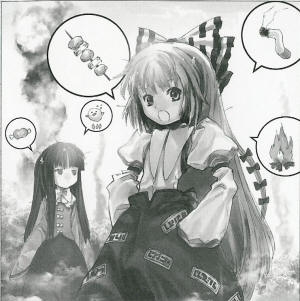
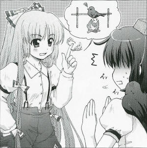

| Season 119, 4th of the Leaf Month (August)
Mysterious Fire in the Bamboo
Forest
Sudden bushfire put out by two girls. At the X month, X day, around 19 hours, flames rose from the Bamboo Forest in the vicinities of Eientei. Fortunately, it only spread to a 10 meter circumference before being checked off and extinguished. There were no victims from this fire. The firefight was carried out by the joint efforts of two girls and several rabbits that were at the scene. Without further knowledge about the fire's cause, and considering the possibility of arson, I'm conducting an investigation. Fujiwara no Mokou and Kaguya Houraisan (both human), who carried out the extinguishing, spoke about the circumstances of the fire's cause and the firefight. "The fire's cause? Well... yeah, well, I don't know about that, but I was there by coincidence so I helped to put it out. Thankfully, it didn't become a tragedy." (Mokou) "My house is nearby here. If the fire were to spread there, it would be a problem. In these circumstances, wouldn't anyone put out a fire that starts up in front of one's own eyes?" (Kaguya) Which is to say that they were together at the fire's scene by coincidence, and don't know about its cause. With nothing in the vicinity that would cause the fire naturally, I can only think of it being either arson or spontaneous combustion. Almost nobody lives around here besides the Eientei residents, and people seldom pass through this place. Had the sighting been any later, it would have become a great tragedy. "Co-could it have been some tobacco litterings? Youngsters these days ain't got no common sense. They recklessly do the most unbelievable things." (Mokou) "It could have been a discarded yakitori. Since this place is a Mecca for yakitori." (Kaguya) Being myself a crow tengu, at hearing the words "Mecca for yakitori", I found myself wanting to quickly take my leave from this place. Therefore, I refrained from a more detailed investigation. Later, when thinking it over calmly, I realized that, besides the fact that a yakitori couldn't possibly have caused a bushfire, the birds that were said to be in the area of the fire scene were actually rabbits. Perhaps this all points to the rabbits being the ones who started the fire? Let's consider it that way. I don't know when and where this fire started. More importantly, I recommend to always check twice for flammable objects around you.
(Aya Shameimaru)
|
|
 Mokou What a weird article. From the point in which it starts about yakitori, it really doesn't look like something fit for a newspaper, right? Aya I'm doing a reflection on this. Mokou Your discipline is lacking, isn't it? And what is it today? Wasn't this incident already settled? Aya I just had some thoughts about it... Speaking of which, the other person..? Mokou Kaguya? Hmmm, I thought that she would say that she's too busy and doesn't want to come, so I didn't call her. Aya This is assuming too much on your own. Mokou But I'm free. Aya Well, either of you is fine. So, the main question is: Regarding this fire, what was its true cause? Mokou Tobacco litterings. Aya There weren't any other people besides you two, right? And yet the fire was quickly put out. Mokou What are you trying to say? Aya If you think calmly about that, anyone would reach the conclusion that you were the ones who started the fire. Given the circumstances, it's the only thing one can conclude. Mokou What started the fire were some tobacco litterings. Aya Could have been something in there that you needed to hide? Mokou Hu hu. If you go around inquiring too much, something awful might just happen. Because this place is a... how was it, a Mecca for yakitori, right? Aya Yakitori! Th-that's it, I remembered. The reason that this place is called a Mecca for yakitori... Mokou Is today's lucky food foie gras? Aya . ..it's because a bird of fire is often seen around here... Mokou But don't you have to avoid eating too much liver? Aya And about this bird of fire and yakitori, Miss Kaguya was... Mokou Hard liver tastes so bad... Aya ...should I spell it all out? Mokou Oops. Wonder if we'll have an emergency around here today? Aya An emergency, like one happening all of a sudden!? Mokou Aren't they always something sudden? What's wrong with that? Aya I messed up. I mean... that's not it! Could you listen seriously to what people are saying from the beginning? Mokou Back at that time, there wasn't any fire. There's not a single trace of fire in the bamboo forest, you haven't seen anything. That was a peaceful, uneventful day. And that's about it. Aya I won't accept such distortion of the truth. And foremost, the news edition has already come out. Mokou Wrong reports simply happen in newspapers. If you do your best to cancel that edition and keep the mistakes under wraps, this incident will simply wane away, right? Aya I will never do such a thing. Mokou Truly such an inflexible tengu... Since your head is so hard, should we put it to roast a little? Or maybe you are hard all the way to the liver? Aya Just what kind of human are you, threatening me like that? Mokou One that has at the least lived more than you. Your great senior. So, wanna try it? Making crow yakitori with the firebird's flame?
Fujiwara no Mokou A human who became immortal and ageless from drinking the Hourai Elixir left by Kaguya. In a cat-and-dog relationship with Kaguya. Appearances: Imperishable Night |
| [PREVIOUS ARTICLE : Keine] | [INDEX] | [NEXT ARTICLE : Mystia] |